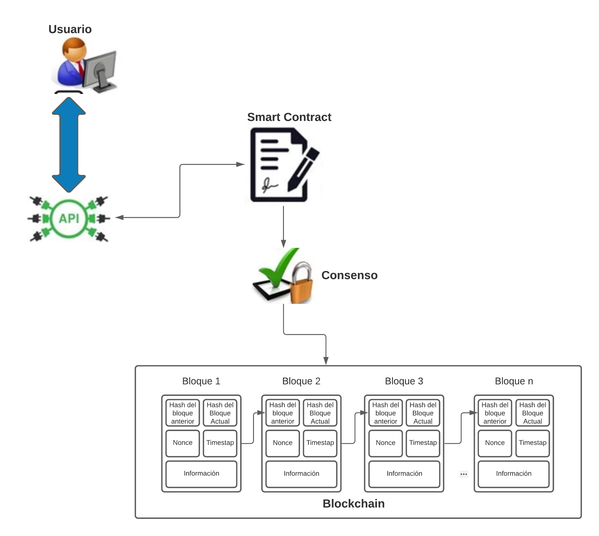

GRUPO : BLOCKCHAIN
PROYECTO : SMART CHAIN
PROBLEMÁTICA
Actualmente existe varios reclamos sobre la pensión universitaria ya que no ha variado mucho con respecto a la pensión que se cobraba antes de la pandemia.
SOLUCIÓN
Crear un Smart Contract que permita registrar todas las transferencias de dinero que hagan uso del fondo universitario, brindando mayor transparencia a los alumnos dándoles mayor tranquilidad ya que estos podrán ver como su dinero invertido está siendo utilizado por la universidad.
Integrantes del Proyecto

RAUL EDUARDO MALLCCO SOLIS
raul_mallcco@usmp.pe
Líder de equipo

ANGELICA KASANDRA RIVERA LAYNES
Angelica_rivera@usmp.pe
QA
ERIK JOEL ESPINOZA MENDOZA
erik_espinoza@usmp.pe
Investigador
JEAN PAUL CHANGANAQUI ARROYO
jean_changanaqui@usmp.pe
Programador
Arquitectura del proyecto

La arquitectura del proyecto está compuesto por:
1.-La API con la que el usuario podrá interactuar con el Smart Contract.
2.-El contrato inteligente que realizará la gestión de la información de manera autónoma o por invocación del usuario cuando detectan eventos externos.
3.-El mecanismo de consenso que aprueba las transacciones lanzadas por el contrato inteligente.
4.-La cadena de bloques cuya información almacenada no se podrá alterar.
Nuestros servicios
REMIX - ETHEREUM
Es un compilador y un IDE basado en explorador y que se pueden usar para compilar contratos Ethereum en el lenguaje Solidity y para depurar transacciones. Remix constituye una excelente manera de explorar contratos de ejemplo, además, se puede usar para escribir, probar e implementar sus propios contratos.
VS CODE
Es un editor de código que se ha refinado y optimizado para compilar y depurar aplicaciones web y en las nubes modernas.
METAMASK
Metamask es un monedero de criptomonedas que se puede usar en navegadores como Chrome y Firefox. Pero no solo eso, pues también es una extensión que se puede emplear en dichos navegadores. ¿Para qué serviría Metamask como extensión? Pues funcionaría como una especie de puente de enlace entre los navegadores normales y la cadena de bloques Ethereum.